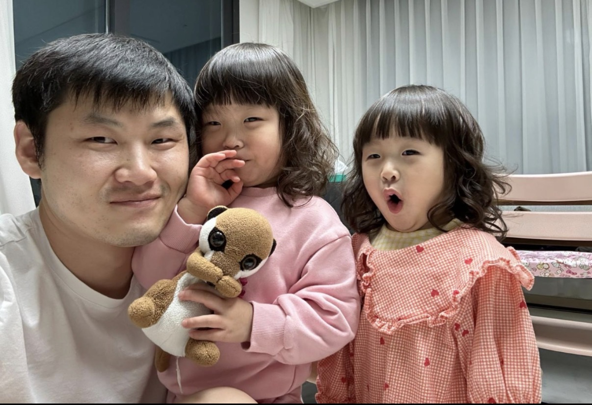

Hongseok Jeong 정홍석, Ph.D.
Acoustics & Vibration Scientist
Senior Researcher, Korea Research Institute of Ships & Ocean Engineering (KRISO)
Ph.D. under Advisor Prof. David Thompson at ISVR, University of Southampton
M.S. & B.S. under Advisor Prof. Soo Gab Lee at Aeroacoustics Lab (AANCL), Seoul National University
Research Summary
Dr. Hongseok Jeong is an acoustics and vibration scientist with over a decade of deep academic and industrial research expertise. Bridging aerospace aeroacoustics, dynamic railway engineering, structural vibro-acoustics, and naval ship hydroacoustics, his work focuses on characterising and mitigating complex acoustic radiation. He is highly proficient in multi-physics computational coupling (such as FEM/BEM, periodic waveguide solvers, and acoustic analogy formulations like FW-H) alongside physical testing in anechoic chambers, towing tanks, and large cavitation tunnels. He updated the core waveguide coding of the 2.5D solver WANDS to evaluate porous acoustic track treatments, and has authored numerous peer-reviewed works in top international and domestic journals. Currently, as a Senior Researcher at KRISO, he leads naval and commercial shipping acoustics programs, specialising in ship propeller underwater radiated noise (URN) monitoring, cavitation noise beamforming, and active noise control.
Research Metrics & Performance
Featured Highlights & Media Coverage
Killing Ship Noise and Greenhouse Gases Simultaneously: Korea's 'Underwater Radiated Noise Reduction Technology' Internationally Recognized 선박 소음·온실가스 동시에 잡는다…세계가 인정한 韓 ‘수중방사소음 저감기술’ ↗
Press coverage highlighting Dr. Jeong's core role in developing and validating KRISO’s Vortex Generator (K-VG). This eco-efficient technology reduces underwater radiated noise by over 3dB and significantly improves ship propulsive efficiency, earning international accreditation and a 23% entry discount at Canada's Vancouver Port EcoAction Program.
Regulating Ship Underwater Radiated Noise: A New Growth Opportunity for the Shipbuilding Industry 선박수중방사소음 규제, 조선 산업 새로운 성장 기회로 봐야 ↗
Special feature on the 5.8 Billion KRW Korean National Project co-led by KRISO to equip commercial merchant ships with low-noise energy-saving devices, enabling the domestic shipbuilding industry to spearhead international maritime environment regulations set by the IMO.
Professional Experience
Senior Researcher
Conducting advanced research in marine hydroacoustics and ship environmental noise. Leading programs to model, measure, and suppress ship propeller underwater radiated noise (URN) and cavitation fields for commercial and defense platforms.
- Represented the Republic of Korea as a technical delegate at the International Maritime Organization (IMO) 10th Sub-Committee on Ship Design and Construction (SDC 10) in London (January 2024), participating in URN policy renewal.
- Researching propeller cavitation dynamics and associated broadband noise signatures using advanced experimental hydrophone arrays.
- Formulating beamforming-based acoustic source level estimation methods utilising onboard hull-mounted pressure sensors, validated in ship models and full-scale trials.
- Directing model tests in the KRISO Large Cavitation Tunnel (LCT) and conducting acoustic trials at sea.
- Collaborating on active noise control (ANC) simulations for propellers under unsteady blade wakes to decrease low-frequency structural excitation.
- Developing marine propulsion performance optimizations, including vessel vortex generator designs and Pre-Swirl Duct systems, to suppress structural pressure fluctuations and low-frequency radiation.
Scientific Journal Reviewer
Serving as an active anonymous peer-reviewer evaluating complex manuscripts submitted to this prestigious, high-impact international acoustics and noise mitigation journal.
Doctoral Researcher & Research Assistant
Conducted pioneering research in railway vibro-acoustics as part of the UK government-funded Track21 (Railway Track for the 21st Century) project, supervised by Professor David Thompson.
- Formulated 2.5D Waveguide Finite Element (FE) and Boundary Element (BE) models based on Biot's poroelastic theory to simulate sound propagation and attenuation in porous rail track treatments.
- Updated and expanded the source code of the 2.5D periodic structure program WANDS (developed at ISVR) to support poro-elastic domains and multi-phase structural-acoustic boundaries.
- Assessed innovative rolling noise mitigation designs, including rail shielding performance, and performed dynamic stiffness measurements of railway ballast and subgrades.
- Conducted structural vibration field trials, and physical acoustics testing in the university's reverberant and anechoic facilities.
Graduate Researcher
Worked under the supervision of Professor Soo Gab Lee, focusing on computational aeroacoustics (CAA) and the fundamental generation mechanisms of rotating wing and aerodynamic noise in atmospheric domains.
- Studied propeller discrete frequency noise and wake-blade interactions.
- Wrote numerical codes linking aerodynamic flow outputs with acoustic boundary integral equations, utilizing the Ffowcs Williams-Hawkings (FW-H) equation to model noise fields in rotating machinery.
Education
Doctor of Philosophy (Ph.D.) in Mechanical Engineering
Supervisor: Professor David Thompson (Professor of Railway Noise and Vibration)
Thesis: A Numerical Investigation of Noise Mitigation for Railway Track (196 pages)
Developed coupled 2.5D waveguide numerical methods based on Biot's theory of poroelasticity, resolving complex structural wave propagation and sound radiation for railway ballasted tracks, slab tracks, and rail dampers.
Master of Science (M.S.) in Mechanical & Aerospace Engineering
Advisor: Professor Soo Gab Lee (Aeroacoustics & Noise Control Lab - AANCL)
Concentrated on aeroacoustics, computational fluid dynamics (CFD), and acoustic analogies (FW-H equation) applied to aerodynamic propeller and blade-wake interaction noise.
Bachelor of Science (B.S.) in Aerospace Engineering
Rigorous foundational curriculum covering fluid mechanics, aerodynamics, structural dynamics, mathematical physics, and computational programming. GPA: 4.0/4.3
Extracurricular Activities & Academic Tutoring:
- Active member of the SNU Rocket Club Hanaro (하나로, 하늘을 나는 로켓): co-developed high-altitude student rockets and participated in experimental launch programs (such as joint hybrid rocketry campaigns in collaboration with KAIST).
- Served as an academic tutor for international SNU students, providing specialized tutoring in advanced mathematics, physics, and fluid mechanics.
Publications, Patents & Academic Portfolio
Peer-Reviewed Journal Publications
Books, Dissertations & Patents
Conference Proceedings & Presentations
Technical Skills
Numerical Modelling
Experimental Diagnostics
Family Spotlight


Dr. Hongseok Jeong and family